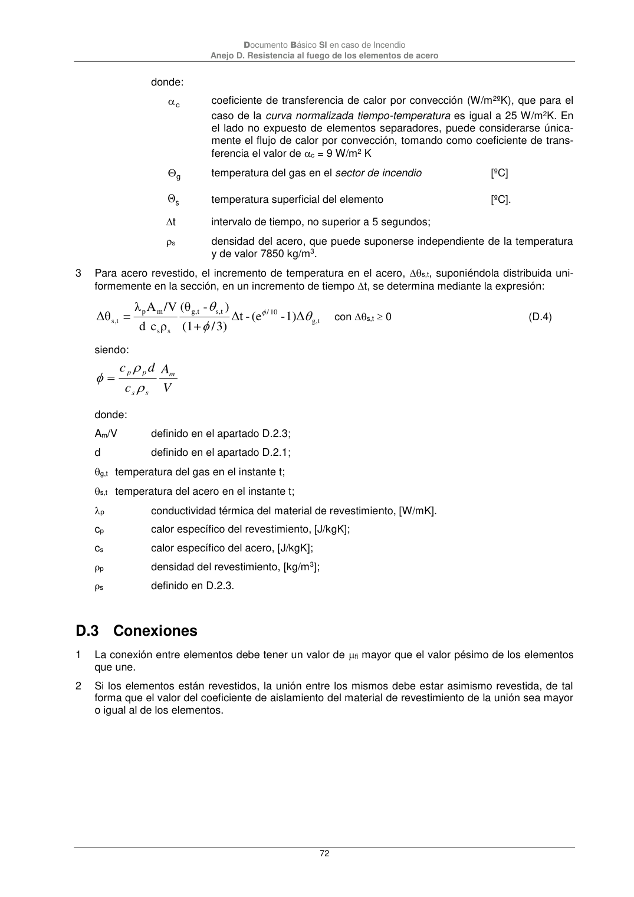

DB-SI · D.3 Conexiones · versión 2025-03-04
SHA256: 0a2e78cd62471d9cc5cfe2efbc6aa39fdbad73c124aea7b039f9de96c141e105 · página física 72 de 92 · métodos de encabezado
solo si están cotejados.
Formatos: Markdown · JSON de bloques · PDF p. 72 · imagen PNG
Documento Básico SI en caso de Incendio
Anejo D. Resistencia al fuego de los elementos de acero
72
donde:
c
coeficiente de transferencia de calor por convección (W/m2ºK), que para el
caso de la curva normalizada tiempo-temperatura es igual a 25 W/m2K. En
el lado no expuesto de elementos separadores, puede considerarse única-
mente el flujo de calor por convección, tomando como coeficiente de trans-
ferencia el valor de c = 9 W/m2 K
g
temperatura del gas en el sector de incendio
[ºC]
s
temperatura superficial del elemento
[ºC].
t
intervalo de tiempo, no superior a 5 segundos;
s
densidad del acero, que puede suponerse independiente de la temperatura
y de valor 7850 kg/m3.
3
Para acero revestido, el incremento de temperatura en el acero, s,t, suponiéndola distribuida uni-
formemente en la sección, en un incremento de tiempo t, se determina mediante la expresión:
t
g,
10
/
t
s,
t
g,
s
s
m
p
t
s,
1)Δ
-
(e
-
Δt
3)
/
+
(1
)
-
(θ
ρ
c
d
/V
A
λ
=
Δθ
con s,t 0
(D.4)
siendo:
donde:
Am/V
definido en el apartado D.2.3;
d
definido en el apartado D.2.1;
g,t temperatura del gas en el instante t;
s,t temperatura del acero en el instante t;
p
conductividad térmica del material de revestimiento, [W/mK].
cp
calor específico del revestimiento, [J/kgK];
cs
calor específico del acero, [J/kgK];
p
densidad del revestimiento, [kg/m3];
s
definido en D.2.3.
D.3 Conexiones
1
La conexión entre elementos debe tener un valor de fi mayor que el valor pésimo de los elementos
que une.
2
Si los elementos están revestidos, la unión entre los mismos debe estar asimismo revestida, de tal
forma que el valor del coeficiente de aislamiento del material de revestimiento de la unión sea mayor
o igual al de los elementos.
V
A
c
d
c
m
s
s
p
p
